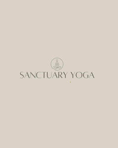

Trade Mark Journal No.2025/025 20 June 2025
UK00004206233 20 May 2025 (9,16,25)

- Class 9
- Downloadable audio recordings featuring guided meditations, yoga classes, mindfulness practices, and breathwork techniques; downloadable video recordings featuring yoga instruction, guided visualisations, and wellness education; downloadable digital publications: workbooks, journals, and ebooks in the fields of yoga, energy healing, emotional wellbeing, and women’s health; downloadable mobile applications providing access to yoga classes, meditation, wellness programmes, and lifestyle advice; downloadable podcasts in the field of mental wellbeing and holistic health; pre-recorded digital media featuring yoga, mindfulness, and personal development instruction.
- Class 16
- Printed matter, namely, guided journals, self-reflection workbooks, affirmation cards, yoga and meditation cue cards, wellness planners, printed course materials, notebooks, printed calendars, stickers, printed posters, and art prints featuring inspirational content; printed educational and teaching materials in the fields of yoga, meditation, energy work, emotional wellbeing, personal development, and women’s health; printed manuals and instructional booklets for yoga and holistic wellness practices; writing paper, envelopes, stationery sets, branded packaging materials, printed wrapping paper, paper gift bags, and tags; printed mindfulness tools, such as habit trackers, gratitude logs, and intention-setting templates.
- Class 25
- Clothing, namely, yoga tops, leggings, hoodies, sweatshirts, tank tops, T-shirts, sports bras, vests, jackets, shorts, and wrap cardigans; activewear and athleisure wear; loungewear; pyjamas; robes; tracksuits; jumpsuits; ponchos; scarves; socks; underwear; headbands; hats; beanies; caps; footwear for yoga, wellness, and casual wear; sandals; slippers; flip flops; sustainable and eco-friendly clothing; clothing made from organic materials; branded clothing for yoga, fitness, and wellness activities; co-ordinated matching sets; festival-style apparel; swimwear, kaftans, and sarongs.
Emma Tamplin